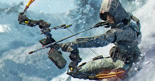
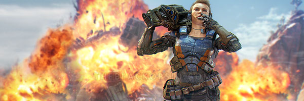
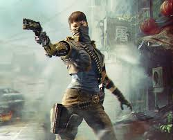
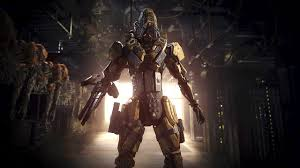
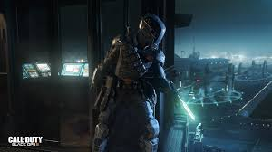
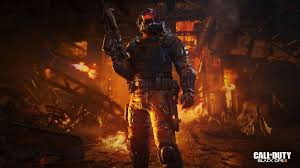
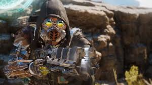

Gameplay
Multiplayer is aanzienlijk geëvolueerd sinds Call of Duty: Black Ops II , terwijl nog steeds de bedoeling dat dezelfde geest op te roepen. Gebouw iets uit Call of Duty: Geavanceerde Warfare , kunnen spelers nu wall-run, power glijbaan, en boost springen hun wegen over kaarten die zijn gebouwd vanaf de grond-up met deze nieuwe traversal opties in het achterhoofd. Zwemmen, evenals onderwater schieten, is ook toegevoegd als een nieuwe manier om de strijd te benaderen. De boost springt functie vergelijkbaar met de exo-sprongen van geavanceerde Warfare . Wanneer de exo-jumps scherpere hoeken en rechte lijnen te leveren, de versterkte sprongen leveren bochten en afwijkingen in Black Ops III .
De Pick 10-systeem van Black Ops II is teruggekeerd, en de 10 punten zal worden gebruikt voor het kiezen van Guns, letale, Tacticals, Attachments, Perks en Wildcards. Spelers zullen veel vrijheid hebben in maatwerk, ook wordt toegestaan om tot zes attachments op een wapen zetten. De Pick 10-systeem heeft geen betrekking op Scorestreaks , als die afzonderlijk worden gekozen.
Naast de traditionele Pick 10 klasse voorbeeld, de speler kan nu een van de tien specifieke tekens, de specialisten, in plaats van als een generieke soldaat. De tien speelbare specialisten, vier geopenbaard in april, twee onthuld op de E3 2015, twee onthuld ter voorbereiding van de Playstation 4 Beta, een bleek minder dan een maand voor de lancering zijn, en de laatste toegevoegd op 14 juni 2016 met de Bo3 contracten :
Ruin : een infanterie-soldaat uit een ruige buurt, die voor cybernetische ledematen vervangingen als vrijwilliger, ondanks het ontbreken van een blessure noodzakelijk is.
-

- Voorrijder : een product van de Braziliaanse favela's, waar ze verdiende een plaats in de gelederen van de Braziliaanse Special Forces.
- Prophet : een lid van de Britse genie die meer dan 70% van zijn lichaam opgewaardeerd met cybernetica heeft. 
- Batterij : een gepantserde explosieven specialist die de Ranger Assessment en selectieprogramma verpletterd. 
- Seraph : een enforcer voor de 54i misdaadsyndicaat die bekend staat om haar discipline in de strijd.
- Nomad : de laatste overlevende lid van een elite snelle implementatie kracht die gespecialiseerd is in oorlog in de jungle. 
- Reaper : een combat robot prototype van een geannuleerde overheid R & D project gebouwd door de Coalescence Corporation. 
- Spectre : een veronderstelde natte fabriek specialist van wie bijna niets bekend is. 
- Firebreak : een pyromaan die het vuur gebruikt als zijn grootste wapen. 
- Blackjack : Danny Li uit de campagne die nu werkt als een huurling proberen om zijn reputatie te herstellen.

Elke specialist geeft spelers de mogelijkheid om ofwel het nemen van een power wapen of een speciale vaardigheid in de strijd. De kracht wapens en vaardigheden hebben het potentieel om de game-wisselaars zijn. In plaats van de mogelijkheid om toegang te krijgen tot wapen of het vermogen van de speler kan worden, een voortdurend opladen meter dicteert wanneer ze het kunnen gebruiken. De meter kosten sneller op basis van prestatie-speler en is afhankelijk van game mode, maar meestal duurt tussen de twee en vier minuten om volledig op te laden voor wapens, terwijl slechts het nemen van ongeveer twee minuten op te vullen voor vaardigheden. Elk Specialist heeft ook hun eigen persoonlijkheid, en zullen offertes en orders te schreeuwen in het veld vrij. De speler is ook in staat om te gebaren en beschimpingen plukken voor hun specialisten via Black Market daalt, evenals aanpassen van hun outfit door het ontsluiten van nieuwe versnelling met tiered uitdagingen.
De wapensmid is een ander element van Black Ops III multiplayer bedoeld om spelers een kans om preset varianten van wapens met specifieke bijlagen, schilderwerkzaamheden en camoufleert creëren geven.
De PC-versie van het spel maakt gebruik van dedicated servers alleen, en bevat ook een FOV slider van 65-120 graden. PlayStation 4 en Xbox One maken gebruik van een hybride systeem: dedicated servers worden voornamelijk gebruikt, maar directe verbindingen zal in plaats daarvan worden gebruikt als ze bieden een betere verbinding. Xbox 360 en PlayStation 3 gebruik directe verbindingen.
Het werd bevestigd tijdens de E3 2015 conferentie PlayStation dat toekomstige DLC eerst beschikbaar zou zijn op de PlayStation consoles in tegenstelling tot de Xbox-consoles. Dit markeert het einde van een meerjarige deal waar Xbox-consoles kregen toegang tot Call of Duty DLC's eerste.